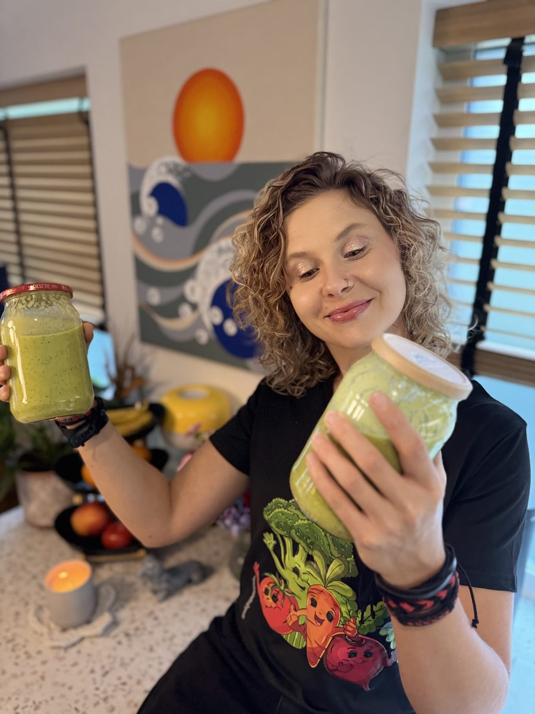

Przyjeżdżam do Twojej kuchni
Warsztaty kulinarne na Śląsku Katowice, Tychy, Pszczyna, Bieruń, Jaworzno i Bielsko-Biała
Indywidualne warsztaty kulinarne 1:1 u Ciebie w domu. Układamy menu pod Twoje smaki, budżet i tempo tygodnia, a potem gotujemy je razem przez około 3 godziny. Gotowe dania zostają u Ciebie.
Umów warsztat
Oświęcim leży tuż przy Śląsku
Moja kuchnia jest w Oświęcimiu, na samej granicy Małopolski i Śląska. Do Bierunia, Tychów czy Pszczyny mam bliżej niż do Krakowa, dlatego na Śląsk dojeżdżam regularnie. Jeśli wolisz, możesz też przyjechać do mnie.
Dlaczego warsztat w Twojej kuchni?
- uczysz się na własnych garnkach, piekarniku i w swoim układzie kuchni, więc od razu wiesz, jak to powtórzyć
- razem zaglądamy do szafek i lodówki, żeby gotować z tego, co już masz
- nie tracisz czasu na dojazd do studia kulinarnego
- jeśli chcesz, przy okazji pomogę uporządkować kuchnię (decluttering kuchni, więcej w poradniku organizacja kuchni)
Warsztat 1:1 czy zajęcia w grupie?
W Katowicach i okolicy działa kilka studiów z zajęciami grupowymi, na których wszyscy gotują ten sam przepis. U mnie jest inaczej: warsztat dotyczy tylko Ciebie. Menu powstaje pod Twoją dietę, budżet i to, ile czasu masz w tygodniu, a zamiast pojedynczych przepisów dostajesz system, dzięki któremu ugotujesz potem sama albo sam.
Dopiero zaczynasz? Zobacz, jak wygląda nauka gotowania dla początkujących. Szukasz prezentu? Mam voucher na warsztat kulinarny.
Jak to wygląda krok po kroku?
- Piszesz, gdzie mieszkasz i co chcesz umieć ugotować.
- Ustalamy menu i termin. Zakupy mogę zrobić sama, zakupy spożywcze rozliczamy osobno.
- Przyjeżdżam i gotujemy razem około 3 godzin.
- Zostajesz z gotowymi daniami i spisanym planem na najbliższy tydzień.
Pytania o warsztaty na Śląsku
Do jakich miast na Śląsku dojeżdżasz?
Najczęściej do Bierunia, Tychów, Pszczyny, Jaworzna, Bielska-Białej i Katowic. Mieszkasz w innym mieście na Śląsku? Napisz, a sprawdzę, czy dam radę dojechać.
Czy prowadzisz warsztaty grupowe albo firmowe?
Na razie prowadzę spotkania 1:1, w przyszłości także dla małych grup. Jeśli masz taki pomysł, napisz, porozmawiamy.
Ile trwa warsztat kulinarny?
Około 3 godzin. W tym czasie gotujemy kilka dań, które zostają u Ciebie, i układamy plan na najbliższy tydzień.
Czy mogę podarować warsztat komuś ze Śląska?
Tak. Voucher na warsztat 1:1 kosztuje 500 zł i jest ważny 6 miesięcy. Zakupy spożywcze na warsztat są płatne osobno. Zamówisz go na stronie misjanatalerzu.pl/voucher.
Umów warsztat na Śląsku
Napisz, gdzie mieszkasz i co chcesz ugotować. Odezwę się, żeby ustalić menu i termin.
Wolisz porozmawiać? Zadzwoń: +48 503 802 961